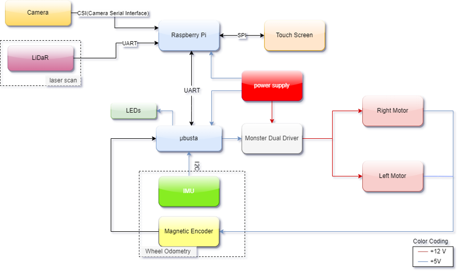
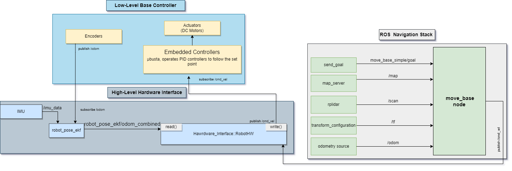
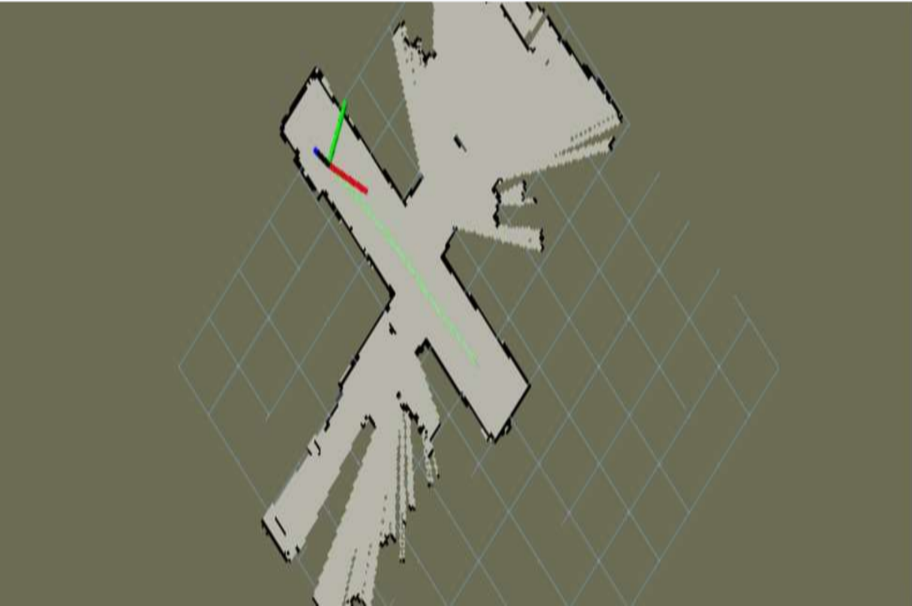

Robusta - Autonomous Service Robot
This project was the course project of "Design of Mechatronics 2" supervised by the Mechatronics Department @ Faculty of Engineering - Ain Shams University, Egypt.
The main target of the project is to design and build an autonomous mobile robot suitable for doing servicing tasks in the coffee shops.
Grade achieved: A
You can check the organization of the project on Github, as well as the poster from here.
- The robot should be able to navigate autonomously in an indoor environment. Therefore, it must be able to localize itself within its working enviroment and detect static and dynamic obstacles and avoid them.
- The robot should build a map for the environment for the first time it operates in and then be able to localize itself in it. RpLiDaR was used for this task interfaced with Nvidia Jetson Nano. Gmapping Pacakge in ROS, which relies on the fastSLAM algorithm, was implemented.
- PID controller on the wheels, with encoders, were implemented on the Low-Level Control (STM32), to control the speed of the robot.
- Emotion recognition of the customer using modern techniques of computer vision. Tools used: Inventor, SolidWorks, ROS, Gazebo, Rviz,
It shows the sensors and actuators that have been used in the robot and the communication protocol done between each device.

{kind=link}
System Software Architecture:

{kind=link}
Here are some videos showing the testing of some subsystems:
This video shows testing mapping by the LiDaR on Rviz.
This video shows Interfacing Rplidar with Jetson Nano.
The following map was a real map made by the robot in the real environment.

video of real mapping
Simulations:
{kind=link}
video of real mapping
This video shows the robot while mapping the enviroment for the first time using Gmapping SLAM algorithm in Gazebo.
Video shows the navigation of the robot and the whole working cycle.
*This project is still under development, my team and I are planning to market the robot to one of the coffee shops in Egypt.